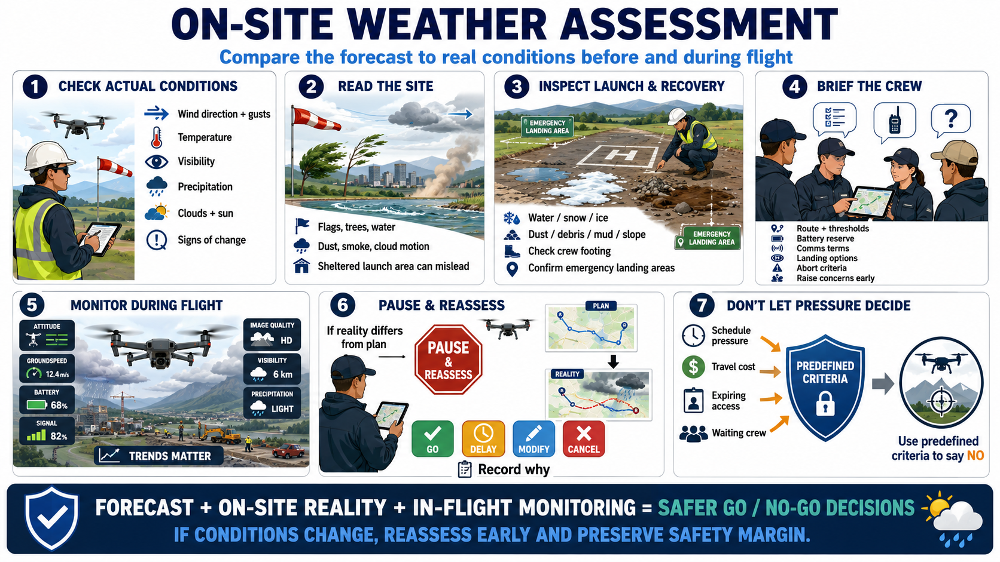

On-Site Weather Assessment
Connecting to LMS... Progress: in progress

Narration
On-site assessment compares the forecast with actual conditions at the place and time of flight. Record wind direction, average behavior, gusts, temperature, visibility, precipitation, clouds, sun, and signs of change.
Observe terrain and structures. Flags, trees, water, dust, smoke, drifting precipitation, and cloud movement can reveal local effects. A sheltered staging area may hide the wind or turbulence along the route.
Inspect launch and recovery surfaces for water, snow, ice, dust, loose debris, mud, slope, and crew footing. Confirm emergency landing areas remain available and that people, vehicles, or activity have not changed the plan.
Brief the crew on current conditions, thresholds, route, battery reserve, communication terms, landing options, and abort criteria. Everyone should understand that raising a concern is expected, not an obstacle to mission completion.
Conditions must be monitored during flight. Watch aircraft attitude, groundspeed, battery use, signal, image quality, precipitation, visibility, and changing ground activity. Trends matter before an alert becomes critical.
If actual conditions differ materially from the plan, pause and reassess. A decision made at the office does not obligate the crew to launch. Record the final go, delay, modification, or cancellation and why.
Client schedules, travel cost, expiring access, or a waiting crew can create pressure to continue. Predefined criteria give the pilot a defensible basis for saying no before that pressure narrows judgment.